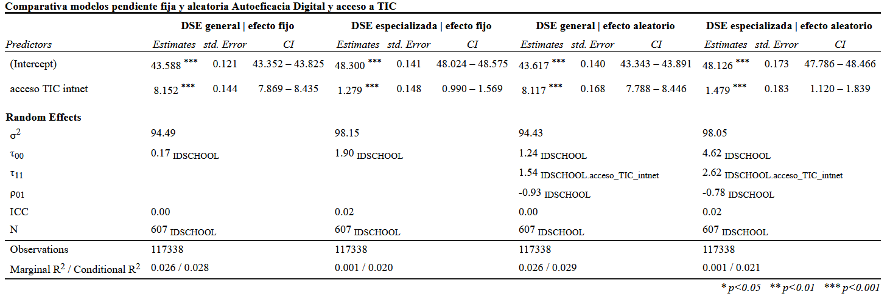

library(pacman)Warning: package 'pacman' was built under R version 4.4.2p_load(dplyr, haven, lme4, summarytools, tidyverse, sjPlot, corrplot, reghelper)
options(scipen = 999)
rm(list = ls()) El presente estudio busca determinar el efecto que el acceso a TIC en el hogar y en la escuela de los estudiantes tiene sobre su autoeficacia digital, tanto general como especializada. Se entiende por autoeficacia digital la percepción que una persona tiene sobre su habilidad para desempeñarse competentemente en entornos digitales que no domina. Para responder a este objetivo, se construyeron modelos multinivel usando datos de ICILS 2023. Las variables dependientes utilizadas son autoeficacia digital general y autoeficacia digital especializada; la variable independiente es un índice de acceso a TIC en el hogar, y se utilizó la escuela como variable de anidación. Los resultados preliminares señalan que tan solo una pequeña porción de la varianza de la autoeficacia digital se asocia a la pertenencia a una escuela. Se encontraron efectos significativos del acceso a TIC en el hogar sobre ambas dimensiones de autoeficacia digital, sin embargo el impacto sobre la general es mucho mayor.
En los últimos años hemos sido testigos de una digitalización acelerada. Las Tecnologías de la Información y la Comunicación (TIC) han entrado en espacios cómo el Estado, el trabajo y la educación, por ende las habilidades informáticas se han transformado en un componente esencial de la participación ciudadana, el desarrollo profesional y la inclusión social (UNESCO, 2018). Tanto en el trabajo como en la vida cotidiana, el dominio de TICs es cada vez menos una opción, y más una necesidad. La capacidad de buscar información en línea, comunicarse de manera efectiva por medios virtuales, resolver problemas técnicos o interactuar con plataformas web son habilidades que estructuran oportunidades en casi todos los ámbitos de la vida (Van Deursen & van Dijk, 2011).
La literatura contemporánea ha documentado, por ejemplo, que la participación ciudadana en democracias digitales requiere conocimientos y habilidades para acceder a información confiable, interactuar con servicios gubernamentales en línea y ejercer derechos a través de plataformas digitales (Van Dijk, 2020). Estas habilidades forman parte de la denominada “alfabetización digital”, la cual es considerada una condición previa para la inclusión social y la equidad en entornos altamente digitalizados, los cuales justamente están en crecimiento exponencial (Livingstone & Helsper, 2007).
Es desde este lugar, que el presente estudio propone ahondar en la comprensión de cómo el acceso a TIC en el hogar y en la escuela influye en los niveles de autoeficacia digital general y especializada de los estudiantes. La autoeficacia es un concepto desarrollado por Bandura (1995), que describe la actitud de un individuo hacia sus capacidades frente a un potencial evento futuro. Una persona autoeficaz (o, más precisamente, con un alto nivel de autoeficacia) es aquella que se considera capaz de reorganizar sus habilidades para masterizar un atributo que no domina en el momento. Es en esa lógica que emerge el concepto de autoeficacia digital, entendida cómo la percepción que una persona tiene sobre su habilidad para desempeñarse competentemente en entornos digitales que no domina. Una alta autoeficacia digital no sólo facilita el uso autónomo de la tecnología, sino que también promueve el aprendizaje continuo en un entorno tecnológico que está en constante cambio (Ulfert-Blank & Schmidt, 2022).
Actualmente, ámbitos cómo la educación están cada vez más mediados por tecnologías, exigiendo que los estudiantes sean capaces de desarrollar habilidades que se adapten a nuevos entornos de aprendizaje. En la dimensión educativa, la autoeficacia digital toma importancia al relacionarse con la disposición de los estudiantes para interactuar con las TIC, así como también con la capacidad de apropiarse de ellas como posibles herramientas de aprendizaje (Hatlevik et al., 2018).Cargamos los paquetes a utilizar
En esta investigación se busca determinar el efecto que el acceso a TIC en el hogar y en la escuela de los estudiantes tiene sobre su autoeficacia digital, tanto general como especializada. La autoeficacia digital se entiende como una variable multidimensional que articula creencias personales con el desempeño en tareas tecnológicas especializadas (Eastin & LaRose, 2000). Pese a que se ha avanzado en el acceso a dispositivos y conectividad, persisten desigualdades estructurales que condicionan las oportunidades de desarrollo digital de los jóvenes. Estudios previos han demostrado que el acceso regular a dispositivos digitales en el hogar, la disponibilidad de conectividad de calidad y la presencia de infraestructura tecnológica en las escuelas tienen efectos significativos sobre las actitudes de los estudiantes respecto a su competencia digital (Fraillon et al., 2020).
Considerando todo lo anterior, se desprende la siguiente pregunta de investigación que guiará este estudio: ¿De qué manera el acceso a TIC en el hogar y en la escuela influye en la autoeficacia digital general y especializada de los estudiantes? En base a esta, el objetivo del artículo es caracterizar la relación entre el acceso a TIC en el hogar y en la escuela con la autoeficacia digital general y especializada de los estudiantes. Para abordarla, se establecen tres hipótesis:
Desde una perspectiva sociológica, la autoeficacia digital es importante de estudiar, en tanto permite reflejar una disposición individual hacia la tecnología. La teoría reciente sobre la brecha digital ha evidenciado que el acceso desigual a la tecnología genera efectos acumulativos en el desempeño académico, las trayectorias educativas y la inclusión laboral (Lythreatis et al., 2022). De ese modo, la autoeficacia puede ser comprendida como un mecanismo que intermedia entre el acceso material a la tecnología y su uso significativo, y por tanto, como un indicador de las oportunidades reales de los jóvenes para participar en la sociedad digital y obtener resultados en la sociedad (Gran et al., 2021). En base a lo anterior, podemos decir que estudiar el cruce entre el acceso a la tecnología, como variable estructural, y la autoeficacia digital se hace relevante en la medida que permite plantear nuevas interrogantes respecto a esta relación.
Para examinar esta relación, se utilizará la base de datos del estudio International Computer and Information Literacy Study (ICILS) del 2023, una Evaluación Internacional a Gran Escala (ILSA por sus siglas en inglés) que recolecta información sobre competencias digitales y contexto escolar en estudiantes de octavo grado de 35 países. ICILS evalúa la alfabetización digital de estudiantes de diferentes países y culturas mediante una prueba de aplicación de conocimientos en el ámbito digital.
Esta base incluye datos de 132.998 estudiantes (117338 luego de limpiar NAs) y en 5299 escuelas, y permite explorar tanto variables individuales como contextuales. Su elección se justifica por el rigor metodológico del estudio, la amplitud de su cobertura internacional, y la riqueza de las variables que recopila, entre ellas medidas de autoeficacia digital, acceso a TIC y características socioeducativas.
Las variables dependientes de este estudio son la autoeficacia digital general (S_GENEFF) y la autoeficacia digital especializada (S_SPECEFF). Estas fueron construidas por ICILS en base a las siguientes variables: IS3G24A, IS3G24B, IS3G24C, IS3G24D, IS3G24E, IS3G24F, IS3G24G, IS3G24H, IS3G24I, IS3G24J, IS3G24K, IS3G24L, IS3G24M. Estas variables corresponden a preguntas tipo Likert con categorías de respuesta de 1 a 4, que buscan medir la autoeficacia relacionada a distintas habilidades del medio digital, en base a la pregunta (traducida) ¿Que tan bien puedes hacer cada una de estas tareas utilizando TIC?. Entre las generales, hay preguntas cómo “Editar imágenes” y “Buscar información en internet”, y entre las especializadas, se encuentran preguntas cómo “Construir o editar una página web”.
Las variables independientes principales incluyen un índice de acceso a TIC en el hogar (construido a partir del uso de computador, tablet, smartphone e internet) y, en etapas posteriores del análisis, la infraestructura TIC de las escuelas. Como variables de control (no aplicadas aún en el presente documento) se consideran el sexo (S_SEX), la edad (S_AGE), y la alfabetización del hogar (S_HOMLIT). Estas variables permitirán construir modelos explicativos que integren factores individuales y contextuales, en coherencia con el enfoque teórico y metodológico adoptado.
El abordaje metodológico se enmarca en una perspectiva de análisis multinivel. Esta decisión se fundamenta en que los estudiantes están agrupados dentro de escuelas, y estas pueden compartir condiciones estructurales que afectan los resultados observables. El enfoque multinivel permite descomponer la varianza de la autoeficacia entre los niveles individual y escolar, y modelar interacciones entre variables de distintos niveles. Por ejemplo, se puede estimar si el efecto de la infraestructura escolar depende del acceso previo en el hogar, lo cual sería invisible en un modelo tradicional (Snijders & Bosker, 2012).
Para trabajar estos datos, se seleccionaron los datos de todos los países y se combinaron usando la función bind_rows.
Para medir el acceso a tecnologías de los estudiantes, se construyó un índice de acceso a TIC en el hogar. El índice, nombrado acceso_TIC_intnet, está compuesto por las variables IS3G16BA (acceso de computador en casa para tareas), IS3G16BB (acceso de tablets en casa para tareas), IS3G16BC (acceso de smartphones en casa) y S_INTNET (calidad del internet en casa), y toma valores del 0 al 1.
Se hizo un modelo nulo para estimar la correlación intra clase (ICC por sus siglas en inglés) con la variable dependiente y la variable de identificador de escuela. Luego se hicieron dos modelos para autoeficacia general y dos para autoeficacia especializada. Para cada dimensión de autoeficacia digital se realizó un modelo con intercepto aleatorio y efecto fijo y otro con intercepto y pendiente aleatoria.
library(pacman)Warning: package 'pacman' was built under R version 4.4.2p_load(dplyr, haven, lme4, summarytools, tidyverse, sjPlot, corrplot, reghelper)
options(scipen = 999)
rm(list = ls()) # Obtener la lista de archivos que comienzan con "BSG" y terminan con ".Rdata"
archivos_bsg <- list.files(
path = "./ICILS2023_IDB_R/Data", # Directorio actual
pattern = "^BSG.*\\.Rdata$",
full.names = TRUE
)
# Ver qué archivos encontramos
print(archivos_bsg) [1] "./ICILS2023_IDB_R/Data/BSGAUTI3.Rdata"
[2] "./ICILS2023_IDB_R/Data/BSGAZEI3.Rdata"
[3] "./ICILS2023_IDB_R/Data/BSGBFLI3.Rdata"
[4] "./ICILS2023_IDB_R/Data/BSGBIHI3.Rdata"
[5] "./ICILS2023_IDB_R/Data/BSGCHLI3.Rdata"
[6] "./ICILS2023_IDB_R/Data/BSGCYPI3.Rdata"
[7] "./ICILS2023_IDB_R/Data/BSGCZEI3.Rdata"
[8] "./ICILS2023_IDB_R/Data/BSGDEUI3.Rdata"
[9] "./ICILS2023_IDB_R/Data/BSGDNKI3.Rdata"
[10] "./ICILS2023_IDB_R/Data/BSGDNWI3.Rdata"
[11] "./ICILS2023_IDB_R/Data/BSGESPI3.Rdata"
[12] "./ICILS2023_IDB_R/Data/BSGFINI3.Rdata"
[13] "./ICILS2023_IDB_R/Data/BSGFRAI3.Rdata"
[14] "./ICILS2023_IDB_R/Data/BSGGRCI3.Rdata"
[15] "./ICILS2023_IDB_R/Data/BSGHRVI3.Rdata"
[16] "./ICILS2023_IDB_R/Data/BSGHUNI3.Rdata"
[17] "./ICILS2023_IDB_R/Data/BSGITAI3.Rdata"
[18] "./ICILS2023_IDB_R/Data/BSGKAZI3.Rdata"
[19] "./ICILS2023_IDB_R/Data/BSGKORI3.Rdata"
[20] "./ICILS2023_IDB_R/Data/BSGLUXI3.Rdata"
[21] "./ICILS2023_IDB_R/Data/BSGLVAI3.Rdata"
[22] "./ICILS2023_IDB_R/Data/BSGMLTI3.Rdata"
[23] "./ICILS2023_IDB_R/Data/BSGNLDI3.Rdata"
[24] "./ICILS2023_IDB_R/Data/BSGNORI3.Rdata"
[25] "./ICILS2023_IDB_R/Data/BSGOMNI3.Rdata"
[26] "./ICILS2023_IDB_R/Data/BSGPRTI3.Rdata"
[27] "./ICILS2023_IDB_R/Data/BSGROUI3.Rdata"
[28] "./ICILS2023_IDB_R/Data/BSGSRBI3.Rdata"
[29] "./ICILS2023_IDB_R/Data/BSGSVKI3.Rdata"
[30] "./ICILS2023_IDB_R/Data/BSGSVNI3.Rdata"
[31] "./ICILS2023_IDB_R/Data/BSGSWEI3.Rdata"
[32] "./ICILS2023_IDB_R/Data/BSGTWNI3.Rdata"
[33] "./ICILS2023_IDB_R/Data/BSGURYI3.Rdata"
[34] "./ICILS2023_IDB_R/Data/BSGUSAI3.Rdata"
[35] "./ICILS2023_IDB_R/Data/BSGXKXI3.Rdata"# Inicializar una lista vacía para almacenar temporalmente los dataframes
temp_dataframes <- list()
# Cargar cada archivo y añadirlo a la lista
for (archivo in archivos_bsg) {
# Crea un entorno temporal para cargar el archivo
temp_env <- new.env()
# Carga el archivo en el entorno temporal
load(archivo, envir = temp_env)
# Identifica el nombre del dataframe en el entorno temporal
nombres_objetos <- ls(temp_env)
for (nombre in nombres_objetos) {
objeto <- get(nombre, envir = temp_env)
# Verifica si es un data frame y si el nombre comienza con BSG
if (is.data.frame(objeto) && grepl("^BSG", nombre)) {
# Añade el dataframe a nuestra lista
temp_dataframes[[length(temp_dataframes) + 1]] <- objeto
}
}
}
# Combina todos los dataframes en uno solo
datos_combinados_bsg <- bind_rows(temp_dataframes)
# Ver el resultado
dim(datos_combinados_bsg) # Dimensiones del data frame combinado[1] 135615 568# Guardamos el nombre del objeto que queremos mantener
objeto_a_mantener <- "datos_combinados_bsg"
# Obtenemos todos los objetos en el entorno actual
todos_los_objetos <- ls()
# Creamos una lista de objetos a eliminar (todos excepto datos_combinados)
objetos_a_eliminar <- todos_los_objetos[todos_los_objetos != objeto_a_mantener]
# Eliminamos los objetos que no necesitamos
rm(list = objetos_a_eliminar)
# Verificamos que solo queda el dataframe combinado
print(ls())[1] "datos_combinados_bsg" "objetos_a_eliminar" "todos_los_objetos" # Vector con todas las variables de interés
variables_seleccionadas <- c(
# Variables esenciales
"CNTRY", # El código del país (tres letras)
"IDSCHOOL", # id único de la escuela
# Variables SES, demográficas y TIC (se agregarán en la próxima entrega)
# "S_HOMLIT", # Home literacy index
# "S_SEX", # Sexo del/la estudiante
# "S_AGE", # Edad del/la estudiante
# Variables del estudio
"S_GENEFF", # Autoeficacia general del estudiante
"S_SPECEFF", # Autoeficacia específica del estudiante
# Variables índice
"IS3G16BA", # Acceso de computador en casa para tareas (escritorio o laptop). Rango: 1 a 4 (nunca a siempre)
"IS3G16BB", # Acceso de tablets en casa para tareas. Rango: 1 a 4 (nunca a siempre)
"IS3G16BC", # Acceso de smartphones en casa (escritorio o laptop) Rango: 1 a 4 (nunca a siempre)
"S_INTNET" # Internet en casa si/no
)
datos_analisis <- datos_combinados_bsg %>%
select(any_of(variables_seleccionadas))#pregunta 1: efecto de acceso TIC en hogar en Actitud hacia las TIC
datos_analisis <- datos_analisis %>%
na.omit() %>%
mutate(across(.cols = -CNTRY, .fns = ~as.numeric(.)))
datos_analisis <- datos_analisis %>%
mutate(
acceso_TIC_intnet = (
((IS3G16BA - 1) * (1/3)) +
((IS3G16BB - 1) * (1/3)) +
((IS3G16BC - 1) * (1/3)) +
(S_INTNET) # S_INTNET ya está en la escala deseada (0-1)
) / 4
)results_0_gen_sch = lmer(S_GENEFF ~ 1 + (1 | IDSCHOOL), data = datos_analisis)
results_0_spec_sch = lmer(S_SPECEFF ~ 1 + (1 | IDSCHOOL), data = datos_analisis)
print(reghelper::ICC(results_0_gen_sch))[1] 0.002445138print(reghelper::ICC(results_0_spec_sch))[1] 0.01799214modelo_DSE_gen_fij =lmer(S_GENEFF ~ 1 + acceso_TIC_intnet + (1|IDSCHOOL), data=datos_analisis)
modelo_DSE_spec_fij =lmer(S_SPECEFF ~ 1 + acceso_TIC_intnet + (1|IDSCHOOL), data=datos_analisis)
modelo_DSE_gen_rndm = lmer(S_GENEFF ~ 1 + acceso_TIC_intnet + (1 + acceso_TIC_intnet | IDSCHOOL),data=datos_analisis)Warning in checkConv(attr(opt, "derivs"), opt$par, ctrl = control$checkConv, :
Model failed to converge with max|grad| = 0.00330391 (tol = 0.002, component 1)modelo_DSE_spec_rndm = lmer(S_SPECEFF ~ 1 + acceso_TIC_intnet + (1 + acceso_TIC_intnet | IDSCHOOL),data=datos_analisis)tab_models <- sjPlot::tab_model(modelo_DSE_gen_fij, modelo_DSE_spec_fij, modelo_DSE_gen_rndm, modelo_DSE_spec_rndm,
title = "Comparativa modelos pendiente fija y aleatoria Autoeficacia Digital y acceso a TIC",
p.style = "stars",
dv.labels = c("DSE general | efecto fijo", "DSE especializada | efecto fijo", "DSE general | efecto aleatorio", "DSE especializada | efecto aleatorio"),
p.threshold = c(0.05, 0.01, 0.001),
show.se = TRUE,
digits =3)
print(tab_models)El análisis del modelo nulo, revela que para la autoeficacia digital general (S_GENEFF), el Coeficiente de Correlación Intraclase (ICC por sus siglas en inglés) estimado fue de 0.0024. Esto sugiere que aproximadamente el 0.24% de la variabilidad total en esta dimensión se encuentra a nivel de las escuelas, mientras que el 99.76% restante reside a nivel individual. En cuanto a la autoeficacia digital específica (S_SPECEFF), el ICC fue de 0.0179, indicando que el 1.79% de su varianza total es atribuible a las diferencias entre escuelas y el 98.21% a diferencias dentro de las escuelas.
Si bien estos valores de ICC indican una influencia contextual escolar modesta en la varianza total, se decide proseguir con el análisis multinivel. Esta decisión se fundamenta, principalmente, en que el objetivo explícito del estudio es investigar el efecto de variables de acceso tanto a nivel individual como escolar, lo cual requiere metodológicamente un enfoque multinivel para una estimación precisa y para evitar la inflación del error de Tipo I en los predictores de nivel escolar.

El análisis comparó cuatro modelos multinivel para evaluar cómo el índice de acceso_TIC_intnet se relaciona con la autoeficacia digital general y especializada. Consistentemente, un mayor acceso a TIC predijo significativamente mayores niveles en ambas dimensiones de la autoeficacia digital. Los modelos con pendientes aleatorias, que demostraron ser ligeramente más descriptivos, indican que el efecto del acceso_TIC_intnet no es uniforme entre escuelas: el incremento en autoeficacia general asociado a pasar de un acceso nulo (índice 0) a un acceso completo (índice 1) fue, en promedio, de aproximadamente 8.1 puntos, mientras que para la autoeficacia especializada fue de alrededor de 1.5 puntos. Notablemente, se encontró una correlación negativa significativa entre los niveles basales de autoeficacia digital de las escuelas y la magnitud de este efecto (ρ01), sugiriendo que contextos escolares con menor autoeficacia inicial tienden a obtener un mayor beneficio del acceso a TIC. A pesar de estos hallazgos, la varianza total explicada por los modelos fue modesta.
Para continuar con los análisis realizados en este documento, se plantean una serie de pasos. Primero, es necesario aplicar los pesos muestrales (TOTWGTS) y técnicas de estimación de varianza cómo Jackknife (JKZONES, JKREPS) para asegurar un correcto cálculo e interpretación de los estimadores. Segundo, en los análisis presentados aún no se agregan variables de nivel 2 (escuela), por lo que las hipótesis 2 y 3 aún no han sido contrastadas. Se añadirá la infraestructura digital de la escuela a los modelos preliminares interpretados en este documento. Por último, para tratar en concreto la tercera hipótesis del estudio se modelará la interacción entre la infraestructura TIC de la escuela y del hogar del estudiante.
Bandura, A. (Ed.). (1995). Self-efficacy in changing societies. Cambridge University Press. https://doi.org/10.1017/CBO9780511527692
Eastin, M. S., & LaRose, R. (2000). Internet self-efficacy and the psychology of the digital divide. Journal of Computer-Mediated Communication, 6(1). https://doi.org/10.1111/j.1083-6101.2000.tb00110.x
Fraillon, J., Ainley, J., Schulz, W., Friedman, T., & Duckworth, D. (2020). Preparing for Life in a Digital World: IEA International Computer and Information Literacy Study 2018 International Report. Springer. https://doi.org/10.1007/978-3-030-38781-5
Gran, A., Booth, P., & Bucher, T. (2021). To be or not to be algorithm aware: A question of a new digital divide? Information, Communication & Society, 24(12), 1779–1796. https://doi.org/10.1080/1369118X.2020.1736124
Hatlevik, O. E., Gudmundsdottir, G. B., & Loi, M. (2018). Digital diversity among upper secondary students: A multilevel analysis of the relationship between socio-economic status and digital competence. Computers & Education, 120, 91–102. https://doi.org/10.1016/j.compedu.2014.10.019
Livingstone, S., & Helsper, E. J. (2007). Gradations in digital inclusion: Children, young people and the digital divide. New Media & Society, 9(4), 671–696. https://www.researchgate.net/publication/30522837_Gradations_in_digital_inclusion_children_young_people_and_the_digital_divide
Lythreatis, S. & Singh, S. K. & El-Kassar, A-N. (2022). The digital divide: A review and future research agenda. Technological Forecasting and Social Change, Elsevier, 175(C). https://www.researchgate.net/publication/356589038_The_digital_divide_A_review_and_future_research_agenda
Snijders, T. A. B., & Bosker, R. J. (1999). Multilevel analysis: An introduction to basic and advanced multilevel modeling. Sage.
Ulfert-Blank, A. S., & Schmidt, I. (2022). Assessing digital self-efficacy: Review and scale development. Computers & Education, 191, 104626. https://doi.org/10.1016/j.compedu.2022.104626
UNESCO. (2018). Digital skills critical for jobs and social inclusion. https://www.unesco.org/en/articles/digital-skills-critical-jobs-and-social-inclusion
Van Deursen, A. J. A. M., & van Dijk, J. A. G. M. (2011). Internet skills and the digital divide. New Media & Society, 13(6), 893–911. https://doi.org/10.1177/1461444810386774
Van Dijk, J. A. (2020). The Digital Divide. Polity Press. https://www.researchgate.net/publication/339751402_Jan_Dijk_2020_The_digital_divide_Cambridge_UK_Polity_208_pp_1799_paperback_ISBN_9781509534456